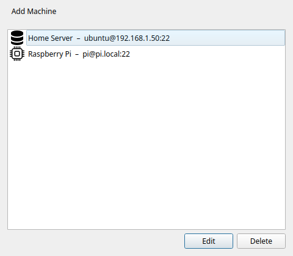
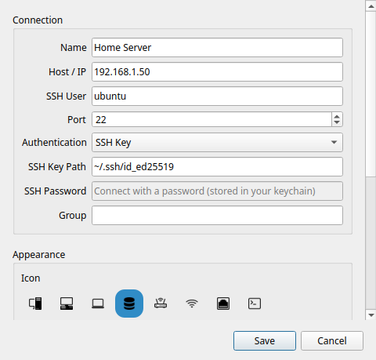
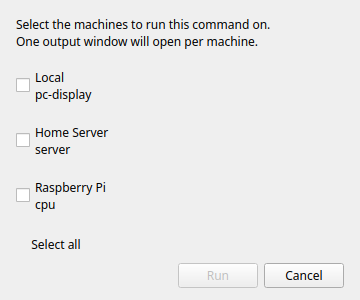

Machines SSH
Fonctionnalité Pro
Les machines SSH nécessitent Commandeck Pro.
Commandeck se connecte aux serveurs distants en SSH. Vous pouvez vous authentifier soit avec une clé SSH (recommandé), soit avec un mot de passe. Si vous choisissez le mot de passe, celui-ci est conservé dans le trousseau sécurisé de votre système d'exploitation — jamais en clair dans un fichier de configuration, et jamais inclus dans une sauvegarde.
Gestion des machines
Ouvrez Menu → Gérer les machines pour voir la liste complète des machines. Depuis cette fenêtre, vous pouvez ajouter, modifier et supprimer des machines.

Note
L'élément de menu Gérer les machines est verrouillé dans la version gratuite.
Détecter les machines sur le réseau
Plutôt que de taper une adresse IP à la main, cliquez sur Détecter dans la fenêtre Gérer les machines. Commandeck analyse votre réseau local à la recherche des appareils qui acceptent les connexions SSH (port 22) et liste ceux qu'il trouve.
- Commandeck remplit automatiquement le Sous-réseau de votre réseau (par exemple
192.168.1.). Si vos machines sont sur une autre plage — un VPN, ou un routeur en192.168.0.— modifiez ce champ, puis cliquez sur Analyser. - Choisissez un appareil dans les résultats et cliquez sur Ajouter cette machine. Le formulaire Ajouter une machine s'ouvre avec l'adresse IP et le nom déjà remplis — il ne vous reste qu'à renseigner l'utilisateur SSH et la clé, puis Tester et Enregistrer.
Les machines déjà ajoutées sont masquées des résultats : seuls les nouveaux appareils sont proposés.
Faire apparaître les noms des appareils
Commandeck tente de découvrir le nom de chaque appareil automatiquement, dans cet ordre : DNS inversé, puis mDNS / Bonjour (les noms .local qu'annoncent les Mac, les Raspberry Pi / avahi et la plupart des NAS), puis NetBIOS (Windows et Samba). Les appareils qui ne s'annoncent pas — typiquement les serveurs sans interface et les conteneurs Docker — n'affichent que leur adresse IP.
Pour obtenir un nom pour ceux-là aussi, votre routeur/DNS doit répondre aux requêtes inversées de votre réseau local. Sur OPNsense / pfSense avec Unbound, activez Register DHCP leases et Register DHCP static mappings. Si un filtre DNS comme AdGuard Home ou Pi-hole se trouve devant Unbound, pointez ses serveurs DNS privés inverses vers le résolveur Unbound pour que les requêtes PTR privées reçoivent une réponse. Vérifiez depuis un terminal avec getent hosts <ip> — dès que cela renvoie le nom, relancez le scan et Commandeck l'affichera aussi.
Note
La détection trouve les appareils dont le SSH (port 22) est ouvert. Un appareil protégé par un pare-feu peut ne pas apparaître même s'il exécute SSH.
Boîte de dialogue Ajouter une machine
Cliquez sur + dans la boîte de dialogue Machines pour ouvrir le formulaire Ajouter une machine.

Nom
Un nom d'affichage utilisé uniquement dans Commandeck. Choisissez quelque chose de descriptif — vous verrez ce nom dans les éditeurs de boutons et dans le sélecteur de machine.
Exemples : Serveur Plex, Pi-hole, VPS Pro, NAS
Hôte / IP
L'adresse IP ou le nom d'hôte de la machine distante. Elle doit être accessible depuis votre ordinateur sur le réseau.
Exemples : 192.168.1.50, plex.local, monserveur.exemple.com
Utilisateur SSH
Le nom d'utilisateur pour se connecter sur la machine distante.
Exemples : pi, ubuntu, admin, votrenom
Port
Le port SSH. Par défaut : 22. Modifiez ce champ uniquement si votre serveur utilise SSH sur un port non standard.
Authentification
Choisissez comment Commandeck se connecte à cette machine :
- Clé SSH (recommandé) — utilise un fichier de clé privée (voir Chemin de la clé SSH ci-dessous). Plus rien à saisir ni à stocker une fois configuré.
- Mot de passe — se connecter avec un mot de passe que Commandeck conserve dans le trousseau de votre système (voir Mot de passe SSH ci-dessous).
Les clés SSH sont l'option la plus sûre et la plus pratique — une fois configurées, vous ne saisissez plus jamais de mot de passe. L'authentification par mot de passe est prévue pour les serveurs où vous ne pouvez pas installer de clé.
Chemin de la clé SSH
Le chemin vers le fichier de clé privée utilisé pour l'authentification.
Exemples : ~/.ssh/id_rsa, ~/.ssh/id_ed25519, ~/.ssh/cle_monserveur
Si le champ est vide, Commandeck utilise votre agent SSH ou la clé par défaut (~/.ssh/id_rsa).
Note
Les clés avec une phrase de passe nécessitent un ssh-agent en cours d'exécution avec la clé chargée. Si la clé est verrouillée, Commandeck affiche un message d'erreur clair — il ne demandera pas la phrase de passe de manière interactive.
Mot de passe SSH
Utilisé uniquement lorsque Authentification est réglé sur Mot de passe. Saisissez le mot de passe de connexion de l'utilisateur distant ; Commandeck l'enregistre et l'utilise à chaque connexion à cette machine. Utilisez Tester pour vérifier que le mot de passe fonctionne avant d'enregistrer.
Où votre mot de passe est stocké
Les mots de passe enregistrés résident dans le trousseau sécurisé de votre système d'exploitation — GNOME Keyring / KWallet sous Linux, Trousseau sous macOS, Gestionnaire d'identifiants sous Windows — chiffrés au repos. Ils ne sont jamais écrits dans les fichiers de configuration de Commandeck ni jamais inclus dans une sauvegarde.
Si aucun trousseau système n'est disponible (par exemple une machine Linux minimale ou sans interface), Commandeck se rabat sur un fichier local obfusqué (.secrets, lisible uniquement par votre compte) et vous avertit que ce n'est pas un chiffrement fort. Dans ce cas, préférez une clé SSH.
Icône
Une icône visuelle affichée à côté du nom de la machine dans le sélecteur et la liste des machines. Six icônes sont disponibles : bureau, ordinateur portable, serveur, routeur, point d'accès Wi-Fi et un appareil générique.
Configuration des clés SSH
Si vous n'avez pas encore de paire de clés SSH, Commandeck peut en générer une pour vous et copier la clé publique sur le serveur :
- Cliquez sur Générer une clé SSH — Commandeck crée une paire de clés Ed25519 dans
~/.ssh/ - Cliquez sur Copier la clé sur le serveur — saisissez votre mot de passe une seule fois (il n'est pas stocké). Cela exécute
ssh-copy-iden interne - Les connexions futures utilisent automatiquement la clé, sans mot de passe
Test de la connexion
Cliquez sur Tester dans la boîte de dialogue de la machine. Commandeck exécute echo commandeck-ok sur l'hôte distant. Un message vert confirme que la connexion fonctionne. En cas d'échec, l'erreur complète de SSH est affichée.
Effectuez le test après l'ajout d'une machine et à chaque modification des informations d'identification.
Assigner des machines à un bouton
Dans l'Éditeur de bouton, la section Machines cibles affiche vos machines sous forme de boutons bascule. Activez les machines souhaitées.
Le sélecteur de machine
Lorsqu'un bouton a deux cibles ou plus activées, un clic dessus ouvre la boîte de dialogue du sélecteur de machine.

Le sélecteur liste chaque cible activée. Sélectionnez-en une et cliquez sur Exécuter. La commande s'exécute uniquement sur la machine sélectionnée.
Tip
Si vous souhaitez exécuter sur toutes les machines à la fois sans choisir, vous pouvez le faire en créant des boutons séparés par machine, ou en utilisant la sélection multiple pour les exécuter en séquence.
Modes de sortie via SSH
Les trois modes d'exécution fonctionnent via SSH :
| Mode | Comportement |
|---|---|
| Silencieux | Le résultat est affiché sous forme de notification toast |
| Afficher la sortie | Le stdout/stderr distant est affiché dans une boîte de dialogue après la fin de la commande |
| Ouvrir dans le terminal | Commandeck génère une commande ssh -t et l'ouvre dans votre émulateur de terminal — session interactive complète |